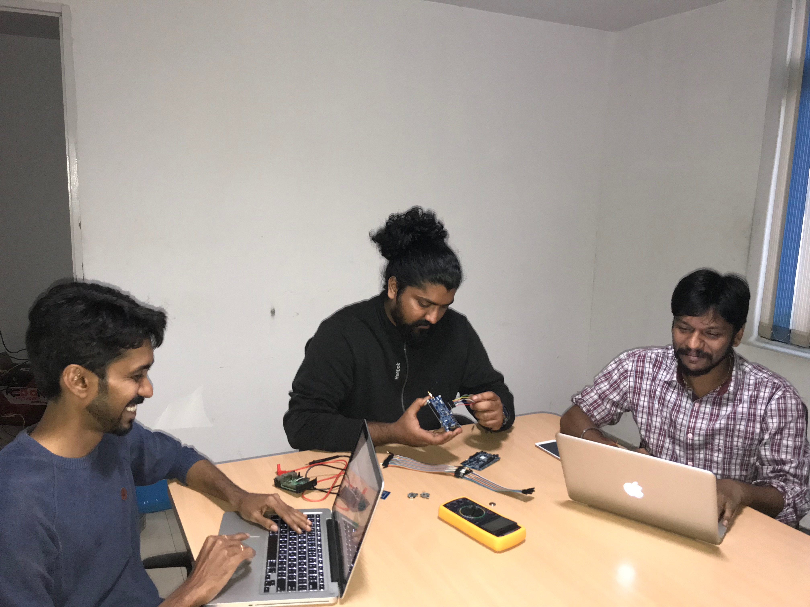
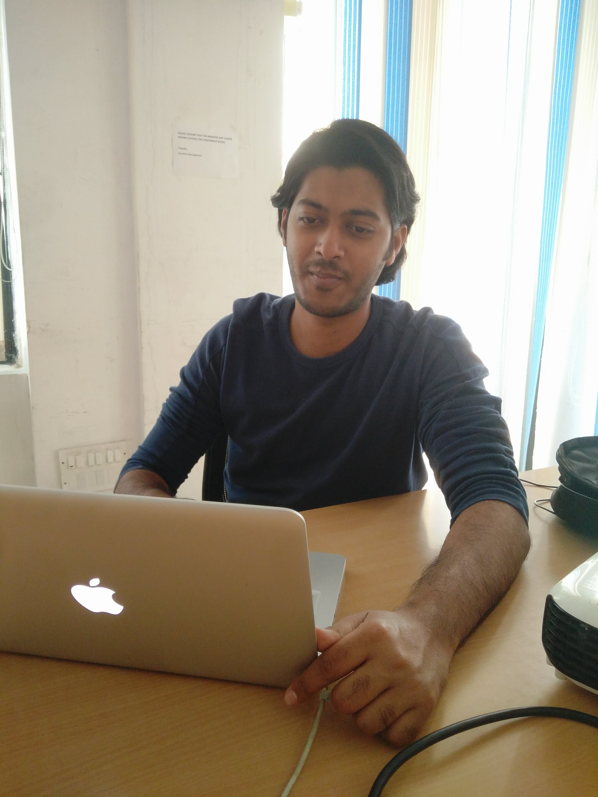
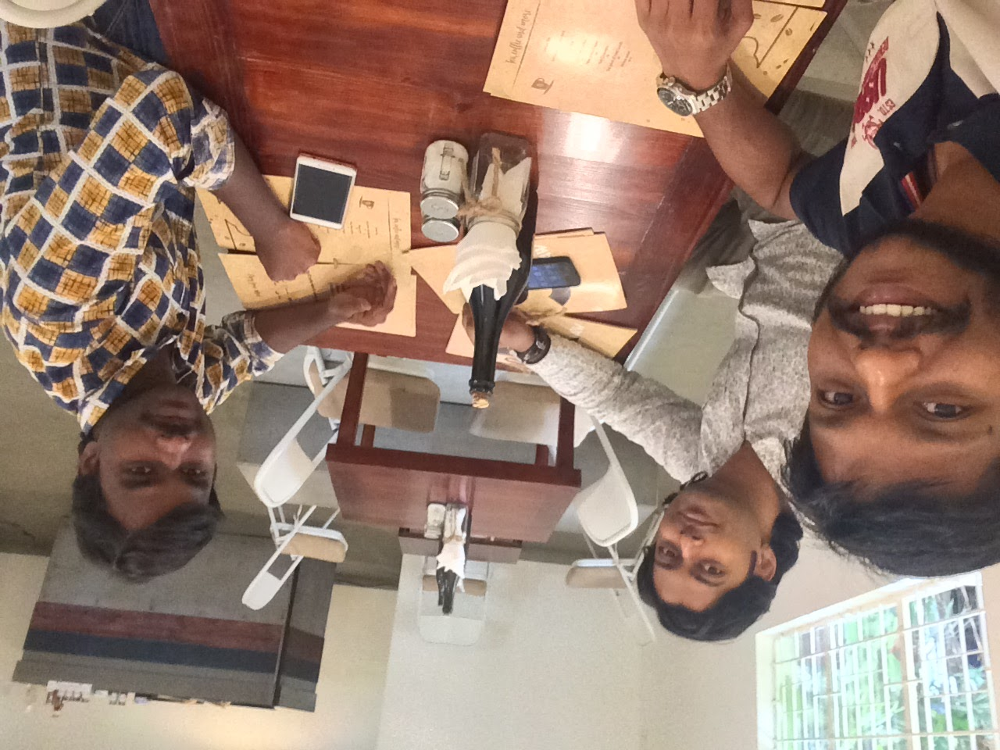
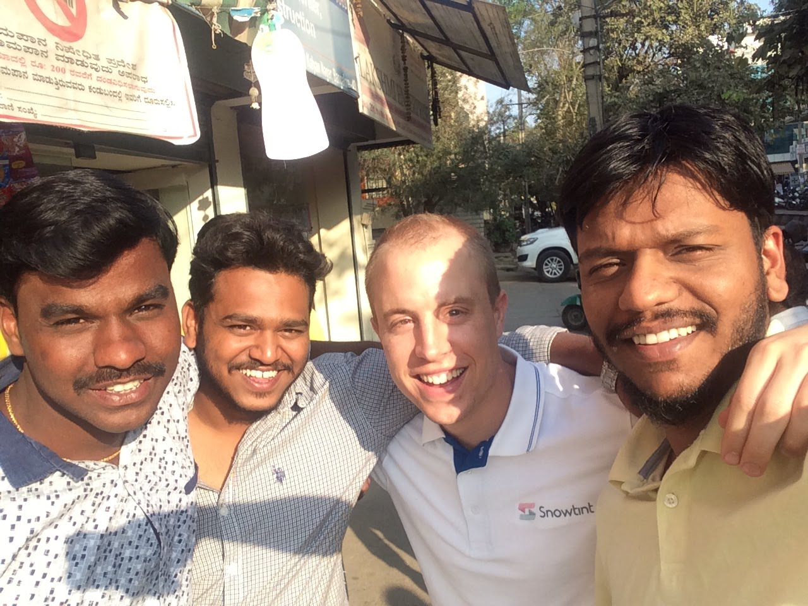
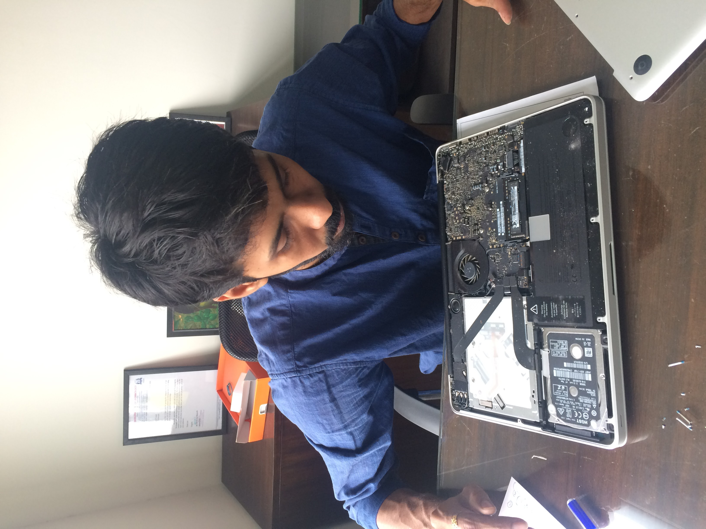

I joined Murali's team at Snowtint Pvt Ltd in Bangalore in 2017 as Lead UX Designer — my first role with explicit ownership of UX outcomes, not just artifacts. Snowtint was a young product studio, which meant I owned the full lifecycle: framing the problem with the founder, running the research, designing the flows, then handing off to engineering and watching it ship.
Across two years I worked on three very different products — a Mac digital-catalogue tool (iPress), a campus hiring marketplace (Campus Select), and a celebrity fitness app (JCVD with Jean-Claude Van Damme). Different users, different industries, same job: lead designer, end to end.
Most work samples are linked below. Reach out for full case-study walkthroughs.
Designing for e-commerce across omnichannel customer journeys has taught me to solve for complex systems outside just the digital space.
Three different products in two years — a Mac digital-catalogue tool, a campus hiring marketplace, a celebrity fitness app. Different users, different industries, same UX exercise: study the actual user, design from their job inwards, ship the simplest thing that works. Click any project for the longer story.
iPress was the studio's flagship — a Mac app that let field sales reps walk into a customer meeting and present a product catalogue without slides or PDFs. The previous version was a tool to be tolerated, not used.
The previous version was designed around the catalogue's data model — products, categories, attributes. The actual user wasn't browsing; they were presenting, in front of a customer, with about ninety seconds to make the point. Designing for that moment is a different problem.
Spent time in customer meetings to see how reps actually used the tool. Re-designed around the moment of presenting — large media, fast switching, no fiddly chrome. The catalogue structure stayed underneath; the surface served the situation.
Design for the situation, not just the user. Knowing the room a tool is used in changes the design more than knowing the persona who uses it.
Fill in: a moment from sitting in on a sales meeting, or a small UI choice that turned out to matter in front of a real customer.Campus hiring in India was running on spreadsheets, WhatsApp groups, and on-campus drives that didn't scale. Companies wanted shortlists; students wanted offers; the campus office was the bottleneck.
Two-sided products usually fail because they're designed as two products. The interesting UX work is in the shared spine — the data model, the lifecycle, the moments where one side's action becomes the other side's input.
Mapped the hiring cycle for all three sides (student, recruiter, campus office) before sketching. Designed the student app for high signal in short browsing windows, the recruiter side for shortlist quality, the campus dashboard as the system of record.
In multi-sided products, design from the data model up, not from any one screen down. Otherwise you end up debugging the same UX problem in three places.
Fill in: a story from one of the sides — a student who got placed, a recruiter who'd been doing it manually for years.A short-fuse partnership project: design and ship a fitness app under Jean-Claude Van Damme's brand, App Store launch in select regions, no second chance to get it right.
The user arriving at a celebrity fitness app probably isn't athletic — they're curious. So the on-ramp has to be generous, and the deeper workouts have to feel earned. Designing for the actual arrival mode, not the aspirational one, was most of the work.
Tight design loops — IA, content structure, workout flows, visual language all decided alongside brand stakeholders so product and brand could agree in the same room. No second-pass reconciliation later.
On brand-led products, get the brand decisions and the product decisions in the same room. Settling them sequentially means redoing both.
Fill in: a moment from working with the celebrity-side team, or a small product decision that the brand reframed.Read more here.




